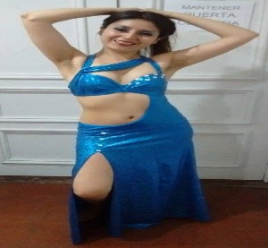

Hola, soy Alexandra UX designer, bioquímica y profesora autodidacta. Busco entender el universo, la sociedad y al ser humano a través de la objetividad de la ciencia y la subjetividad de la emoción. Aprendí programación para crear mi propia página web donde subir mis historias sobre química y otras áreas del conocimiento, buscando llegar a más alumnos. Y me gustó tanto que ahora no solo quiero crear páginas web, sino que también juegos, y programas. En éste camino conocí el diseño de experiencia de usuario. Desde entonces sé que quiero diseñar, escribir contenido, estructurarlo, y conocer los números que muestran cómo las personas usan un producto digital, o un servicio.
La tecnología nos conecta con las personas que estamos lejos, pero al mismo tiempo nos aleja de los que están a nuestro lado, por eso me interesa que mi trabajo involucre un profundo contacto humano, que sea útil y contribuya a hacer de éste mundo un lugar mejor, que nos permita tener más tiempo para estar con quienes amamos y nos ayude a eliminar las barreras del desconocimiento.
La vida me ha hecho fuerte, siempre me supero y sigo adelante, aunque tome tiempo y trabajo hacerlo. Quizás las inclemencias del clima de mi natal Valdivia me han dado esa fortaleza.
En mis tiempos libres me gusta participar en voluntariados y organizaciones humanas, tales como centros de alumnos, grupos de iglesia y scouts, talleres de teatro, danza y coros. También amo viajar, conocer nuevos lugares y personas, leer e inventar historias. Me encanta todo lo friki, como los juegos de rol, de tablero, algunos de consola o PC, las películas, series y animé.

"Tengo la mejor y más alta opinión sobre las capacidades de Alexandra Álvarez, es muy estudiosa y responsable, se maneja con facilidad en laboratorio, ha demostrado ser capaz de resolver problemas complejos con gran autonomía e iniciativa, además de ser muy rigurosa y exigente con la calidad de su trabajo. Otra gran capacidad de Alexandra es su facilidad de conformar equipos de trabajo, tiene muy buen carácter, es empática y se relaciona muy bien con las personas, es cooperadora y muy colaboradora."
- Marcia Costa Lobo, profesora y ex directora del ICYTAL, UACh, Valdivia, Chile.